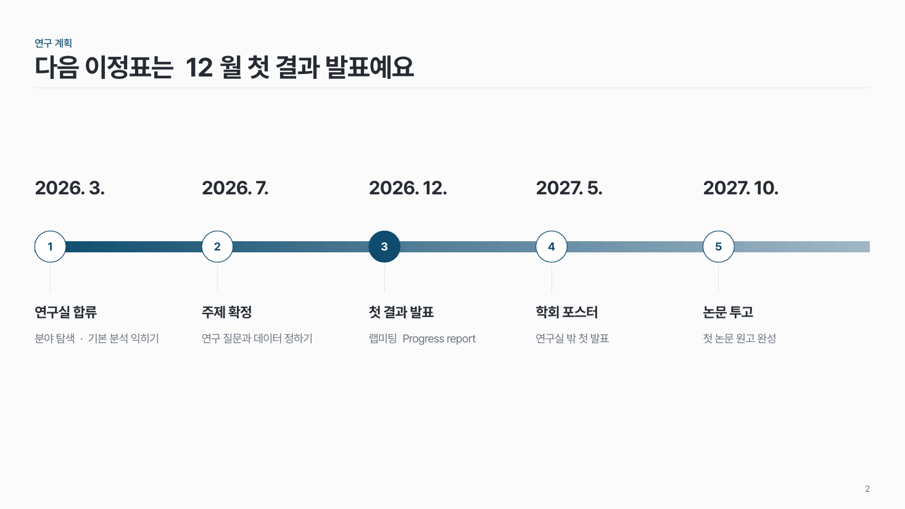

시간축 배지 time-02
가로 띠 위에 시점을 번호 원으로 찍고, 위에는 날짜, 아래에는 사건을 써요.

이 시안
시점 5개 · 아래 결론 줄 + 강조 칸
슬라이드 제목: 첫 논문까지 1년 반을 잡아요
언제 쓰나
연혁이나 마일스톤처럼 날짜가 박힌 사건 3–8개를 보여 줄 때요.
구성
- 가로 띠 하나를 그어요 (주조색 → 밝은 같은 계열 그라데이션).
- 시점마다 띠 위에 번호 원.
- 원 위쪽에 날짜를 크게, 원 아래 짧은 선에서 사건 이름과 설명.
- 마감처럼 꼭 볼 것은 아래 결론 줄의 강조 칸으로.
지킬 것
- 시점은 3–8개, 간격은 같게.
- 날짜는 크게, 설명은 작게 한두 줄.
- 진한 원은 한 곳만.
하지 말 것
- 시점마다 다른 색 원을 쓰지 않아요.
- 띠 위에 화살표를 여러 개 얹지 않아요.
더 볼 게시물 Instagram @peedori_
시안 비교
같은 내용을 옵션만 바꿔 그렸어요. 그림을 누르면 크게 보여요.
A시점 5개 · 아래 결론 줄 + 강조 칸
슬라이드 제목: 첫 논문까지 1년 반을 잡아요

B같은 내용 → 한 시점 강조 · 결론 줄 없음
슬라이드 제목: 다음 이정표는 12월 첫 결과 발표예요